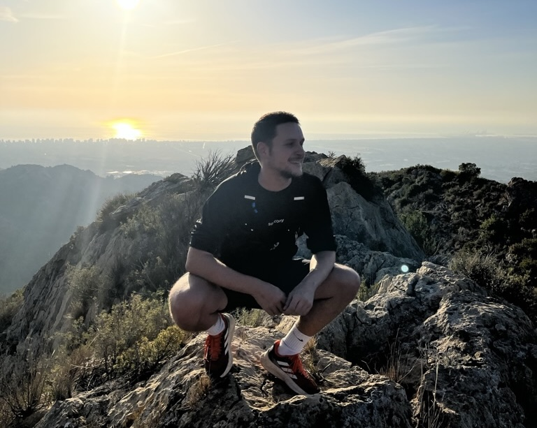

¡Bienvenidx! Me llamo Jaime y soy graduado en Publicidad y Relaciones Públicas. Actualmente estudio para formarme como Desarrollador Full Stack. Estoy en búsqueda de unas prácticas que me permitan aplicar mis conocimientos, desarrollar nuevas habilidades y crecer tanto personal como profesionalmente. ¿Hablamos?
Formación

- Máster en Programación Web - Full Stack Development | Oct 24 - Actualidad
- Centro de Estudios de Innovación, Diseño y Marketing, Valencia
- +Diseño Web HTML5, CSS y Javascript.
- +Desarrollo Full Stack.
- +Curso Diseño UX / UI.
- Programa formativo superior: Agente del Cambio | Ene 24 - Mar 24
- Escuela de Organización Industrial y fondos europeos Next Generation, Castellón
- +Creación de procesos de digitalización en empresas.
- +Implementación de nuevas herramientas y metodologías digitales.
- +Identificación de áreas de mejora.
- +Innovación y diseño de estrategias digitales.
- Grado en Publicidad y relaciones públicas | Sep 15 - May 20
- Universitat Jaume I, Castellón
- +Intercambio académico en Univ. Nacional del Litoral, Argentina (2018).
- +Asignaturas de Diseño y Comunicación visual.
Experiencia laboral

- Asistente de cocina + camarero en Monterrey Restaurante | Mar 24 - Ahora
- Gestión eficaz de múltiples tareas en un entorno dinámico y cambiante, actitud proactiva.
- +Diseño Web HTML5, CSS y Javascript.
- SDR + Account executive en Declarando Asesores | Oct 21 - Ene 23
- Producto SAAS en contexto startup.
- + Prospección de leads Inbound y Outbound.
- + Detección de pains en clientes potenciales.
- + Relación con cartera de clientes y habilidades de negociación.
- + Consultoría de servicios y valor, cierre de ventas.
- Director creativo y diseño en Aries Comunicación | Oct 20 - Mar 21
- Colaboración en un proyecto de agencia de publicidad creado junto a compañeros de universidad, trabajé con clientes del sector de la restauración y la industria musical.
- + Creación de ideas y estrategias de comunicación.
- + Branding personal.
- + Creación de manuales de identidad y documentos corporativos.
- Prácticas en el Centro Europeo de Empresas e Innovación | Jun 20 - Ago 20
- Departamento de comunicación, obteniendo una amplia perspectiva del mundo de las startups, desde su creación pasando por todas las fases de su desarrollo.
- + Creación de contenido web para CEEI Castellón y Emprenem Junts.
- + Dinamización web y publicación en perfiles de redes sociales.
- + Planificación de eventos y talleres para startups.
- Vendedor deportivo en Decathlon | Jun 19 - Sep 19
- Venta, atención al cliente y asesoramiento deportivo durante la compra.
- + Prospección de leads Inbound y Outbound.
- + Detección de pains en clientes potenciales.
- + Relación con cartera de clientes y habilidades de negociación.
- Técnico deportivo en CTC Tenis Drive Academy | Ene 15 - Jun 19
- Grupos de distintas edades y niveles: inicio, perfeccionamiento y competición.
- + Prospección de leads Inbound y Outbound.
- + Detección de pains en clientes potenciales.
Aptitudes e idiomas

- Lenguajes y programas:
- + HTML 5 y CSS | Intermedio, estudiando actualmente
- + JavaScript | Intermedio, estudiando actualmente
- + Python | Intermedio, estudiando actualmente
- + React | Intermedio, estudiando actualmente
- + Visual Studio Code | Intermedio, estudiando actualmente
- + Pack Adobe: Illustrator, Photoshop, InDesign y Premiere | Profesional
- Comunicación:
- + Relación a corto, medio y largo plazo con distintos clientes.
- + Negociación y habilidades de venta con clientes.
- + Experiencia en la creación y presentación de ideas y propuestas.
- Creatividad y dibujo:
- + Creatividad y pensamiento estratégico.
- + Conceptualización de bocetos y dibujos a mano durante el proceso creativo.
- Otros:
- + Microsoft Office y sistema Apple | Profesional
- + Social Media | Profesional
- + SalesForce, Notion, Trello, Slack | Profesional
- Idiomas:
- + Inglés| Competencia profesional.
- -FCE B2, Cambridge 2024.
- -Estudio continuado para obtener el CAE C1, Cambridge.
- + Catalán | Nativo.
- -JQCV C1, Certificado.
- + Español | Nativo.